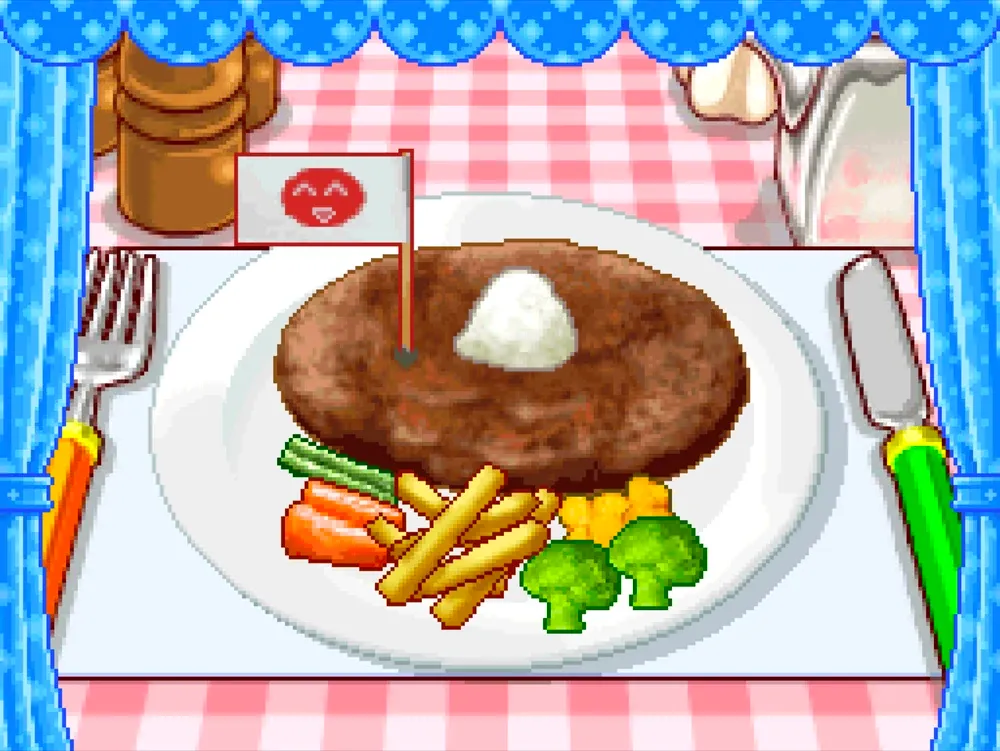
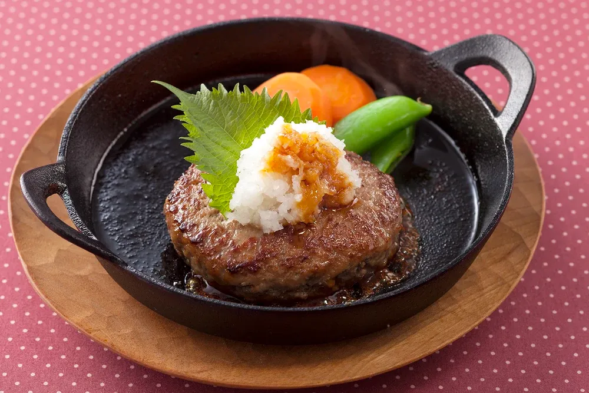

Japanese Hamburg Steak
El hambāgu tiene más de 140 años de historia en Japón: en 1882, en la inauguración de la primera escuela culinaria japonesa, se sirvió un plato considerado el prototipo del hambāgu actual, entonces llamado "hamburogu steak".
Aunque se considera un plato yōshoku, cocina occidental adaptada al gusto japonés, lo habitual es servirlo acompañado de arroz blanco en lugar de pan.
En Japón se elabora habitualmente con una mezcla de carne de cerdo y ternera picadas, y desde los años 80 se vende también en formato envasado al vacío listo para usar en el bento.
A diferencia de su primo europeo, el hambāgu japonés se sirve con una gran variedad de salsas, desde demi-glace hasta ponzu con daikon rallado, y es frecuente encontrarlo en planchas de hierro caliente para mantener la temperatura en la mesa, una presentación única de Japón.

Ingredientes
Pasos de la receta
- Slice an onion! Slice! Chop up! Cortar la cebolla en trozos pequeños con el cuchillo
- Melt the butter Derretir la mantequilla en una sartén
- Sauté! Sofreir la cebolla en la mantequilla derretida sin quemarla
- Add the ingredients!Pon la carne molida en un bol, añade un huevo, el pan rallado, la cebolla y la pasta de miso marrón
- Knead!Mezla los ingredientes en una masa uniforme
- Make shape!Con las manos, haz bolas con la masa
- Pan-fry! Cocina la carne en la sarten por los dos lados a fuego alto
- Stew! Pon a hervir el caldo de pescado y alga, añade la salsa de soja, el azúcar, el alcohol para cocinar y el almidón de patata
- Grate! Ralla el rábano en trozos pequeños
- Arrange the plate! Coloca la carne y los huevos en el plato y decora al gusto

Gameplay de la receta